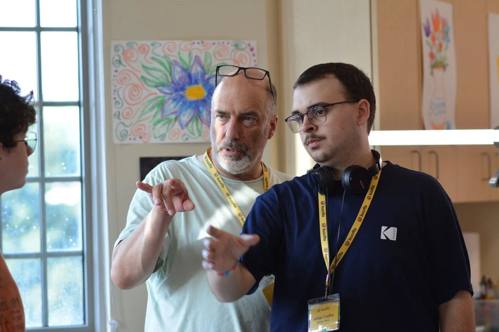
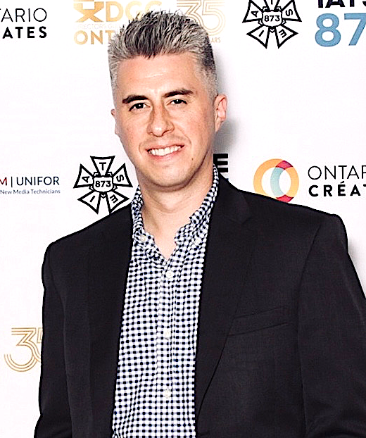
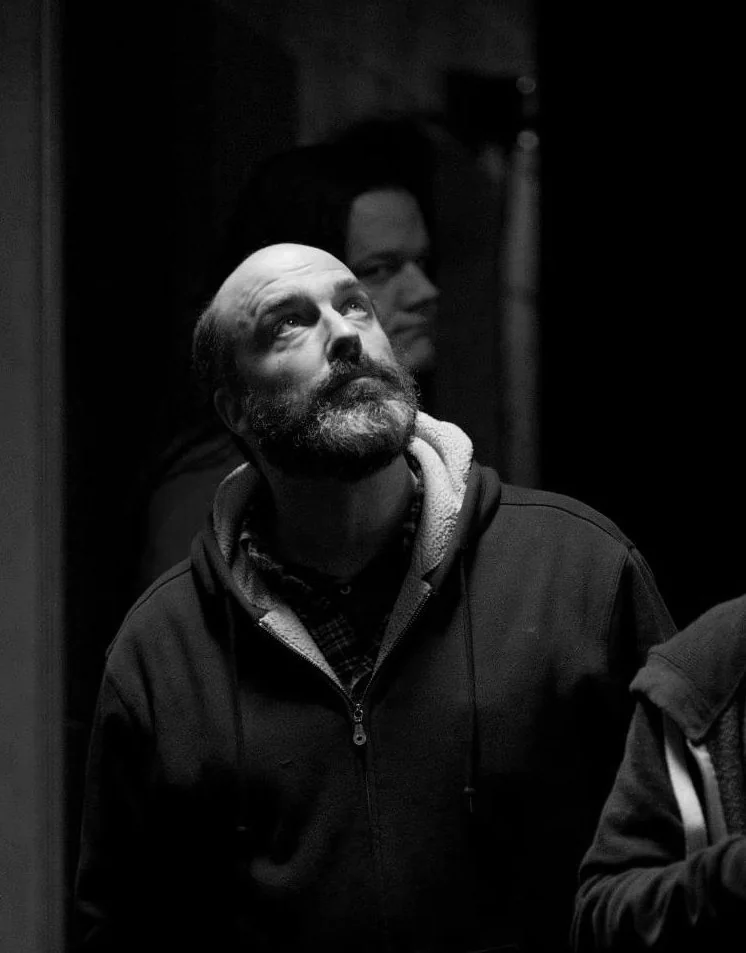
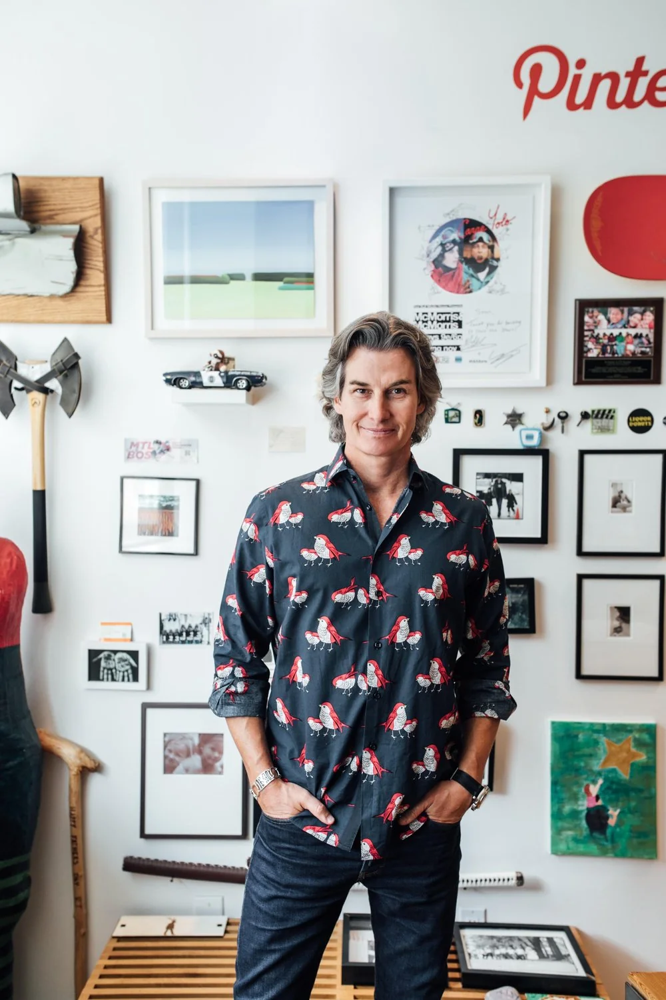
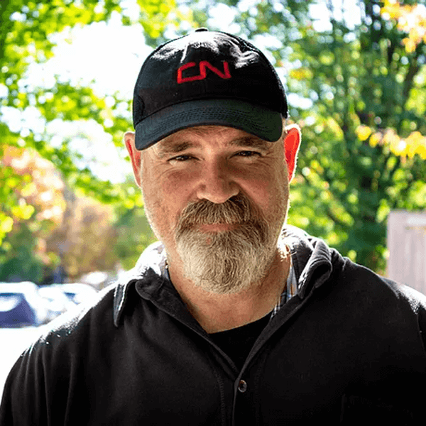

Industry-Level Guidance
Students are guided through every stage of production by experienced industry veterans who provide hands-on mentorship, share invaluable real-world knowledge, and offer thoughtful career guidance.
Meet Your Mentors
How Mentorship Works
One summer in Windsor, four feature films, and industry veterans beside the crew from the first script read to final delivery.
-
From May 3
Pre-Production
Mentors help each department break down the scripts, plan the shoot and design the look of all four films before cameras roll.
-
Four shoots
On Set
Students hold the roles. Mentors work beside them in their departments, answering questions and stepping in with advice when a scene gets tricky.
-
Every film
Post-Production
Student editors and post crew finish every film with guidance from post-production veterans, from the first cut to final delivery.
-
Wrap, Aug 31
Career Guidance
Mentors share how they built their careers and offer advice on reels, credits and next steps, so students leave with more than four films on their résumé.
11 Industry mentors
1978 Earliest mentor credit
Emmy CSA, Genie and Gemini winners
Mentors’ work has appeared on
Your 2026 Mentors
Producing
Bill Marks
EXECUTIVE PRODUCER
Bill Marks is a Canadian film producer known for his work across independent cinema. Since his first job as props master in 1978, his credits have ranged from studio features to indie horror, plus a ton of Christmas movies. Focused on strong, character-driven storytelling, he has collaborated with numerous Oscar-winning filmmakers and actors, balancing artistic integrity with broad audience appeal.
IMDb credits for Bill Marks

Producing
Anthony Polito
PRODUCER
Hailing from Chicago, Anthony is a film and television producer whose career spans scripted development, studio production, talent representation, and film distribution. Forged by his experience in Los Angeles working with leading entertainment brands including Netflix, HBO, Fox Sports, and Apple, he brings a filmmaker-first ethos and a refined eye for emerging creatives, collaborating on award-winning, talent-driven content.
IMDb credits for Anthony Polito
Post-Production
Roberta Bratti
POST-PRODUCTION EXECUTIVE
Roberta Bratti is the Vice President of Operations at Urban Post Production, where she oversees technical and creative workflows across feature films, television, shorts, animation and documentaries. With nearly 30 years of industry experience, she leads teams with a strong emphasis on collaboration and client service, and plays a key role in scaling services for global content producers and major studios.
IMDb credits for Roberta Bratti

Camera
James Griffith
CINEMATOGRAPHER
James is a Toronto-based cinematographer with 28 feature credits across film and television. Starting in commercials in the 1990s, he developed a disciplined eye for lighting and composition. His collaborators include 20th Century Fox, Discovery Channel, National Geographic, CTV, CBC, Pepsi and Nike. His work includes the DGA Award–winning The Holy Hustle, and he earned Best Cinematography honors for Darken.
IMDb credits for James Griffith
Directing
Gail Harvey
DIRECTOR & PRODUCER
Gail Harvey is a multi‑award‑winning film and television director and producer who has made five award-winning feature films. Her six Lifetime movies include No One Would Tell, which won the Canadian Screen Award for best direction in a TV movie. Her television credits include Virgin River (Netflix), Sullivan’s Crossing (CTV/CW), Northern Rescue (Netflix/CBC), The Line (HBO) and Pretty Hard Cases (CBC).
IMDb credits for Gail Harvey

Producing
Sean Buckley
DIRECTOR & PRODUCER
Sean Buckley is an award-winning director, producer and entrepreneur, and the driving force behind Buck Productions, one of North America’s most recognizable content houses over the past 30 years. True to the company motto, Versatile as Buck, he produces everything from unscripted television to documentaries and feature films, and pioneered branded content for some of the world’s most influential brands.
IMDb credits for Sean Buckley

Producing
John Laing
EXECUTIVE PRODUCER
John Laing is a multiple Genie, Gemini, CSA and Emmy Award–winning filmmaker and mentor, and co-owner and managing partner of Urban Post Production. Starting his career in 1987, he trained under renowned directors including Norman Jewison, David Cronenberg and Peter Medak. The company has delivered hundreds of film and television projects to partners including Netflix, Amazon, Apple TV, HBO and Sony Pictures.
IMDb credits for John Laing
Art
Kimberley Nash
PRODUCTION DESIGNER
A former Windsorite, Kim began at WCCA (Walkerville Centre for the Creative Arts) and has over 15 years of experience in film, television and stage. As a Production Designer and Prop Master, she has worked across set decoration, prop sourcing and fabrication, scenic painting and graphic design. Her most recent credits include Sweetness (dir. Emma Higgins) and Love is Not the Answer (dir. Michael Cera).
IMDb credits for Kimberley Nash
Directing
Alpha Nicky
DIRECTOR
Alpha is an award-winning French filmmaker based in Toronto. She began creating promotional content for agencies in Paris and London before specializing in fiction and documentaries, earning recognition from festivals around the world. Her move into television brought nominations at the 2025 Canadian Screen Awards and Prix Gémeaux. She is passionate about pushing the boundaries of traditional storytelling.
IMDb credits for Alpha Nicky
Legal
Jason Meloche
ENTERTAINMENT LAWYER
Jason is a litigation and entertainment lawyer whose career spans performance, production, finance and law. A former professional performer in Miss Saigon and Les Misérables, he brings an insider’s view of the industry. Since 2012 he has worked in business development, legal affairs and creative industries banking at White Pine Pictures, National Bank and RBC, advising independent producers on financing and growth.
Directing
Lee Kestenberg
ASSISTANT DIRECTOR
Lee is a Toronto-based 1st AD who has worked in production for over 25 years, across feature films and episodic television in a range of genres. He brings scheduling and logistical insight as well as creative vision to every set, and shares the ins and outs of filming, a drive to keep perfecting his craft, and the value of team-building with the young filmmakers in the program.
IMDb credits for Lee Kestenberg
More to be Announced
We have a growing list of seasoned industry professionals who are excited to work alongside and mentor students.
Follow us on
Instagram
to stay updated.
Questions About Mentorship
Which departments have a mentor?
Producing, directing, camera, art, post-production and legal, with more mentors still to be announced. Tags on each mentor’s card show their department.
Do mentors make the films for us?
No. Students hold every role on all four films. Mentors work beside you in your department, answering questions and stepping in with advice when a scene gets tricky.
When do mentors get involved?
From the start of pre-production on May 3 through to wrap on August 31: planning the shoot, on set for all four films, and in the edit suite through final delivery.
Do I need film experience to learn from a mentor?
No. You don’t need to study film to join the crew, and mentors are there to help you learn the role. See who can apply.
Will mentors help with my career after the summer?
Mentors share how they built their careers and offer advice on reels, credits and next steps, so you leave with more than four films on your résumé.

Student Applications Closed
Come Back Here in Early 2027, Buzzflix will be back!
More Info on YouTube